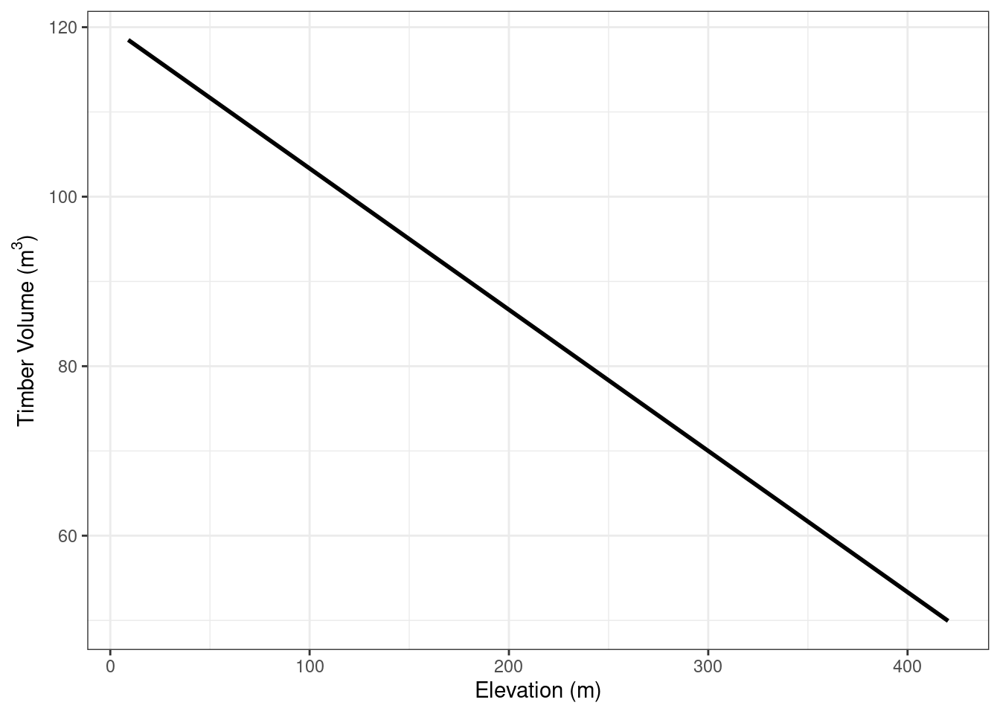
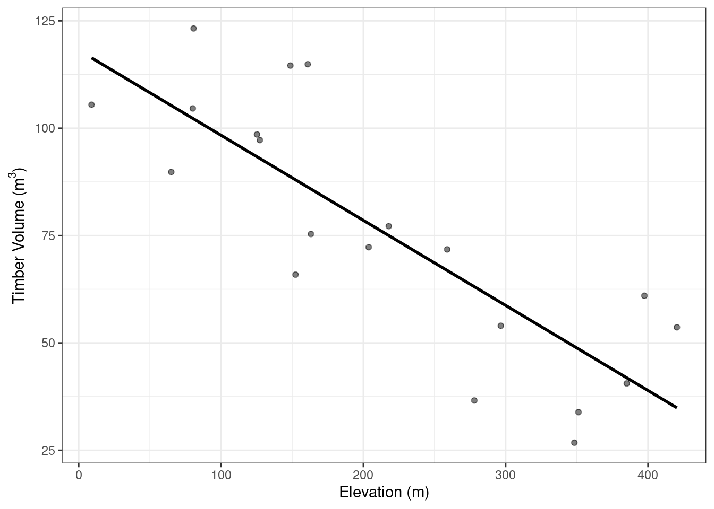
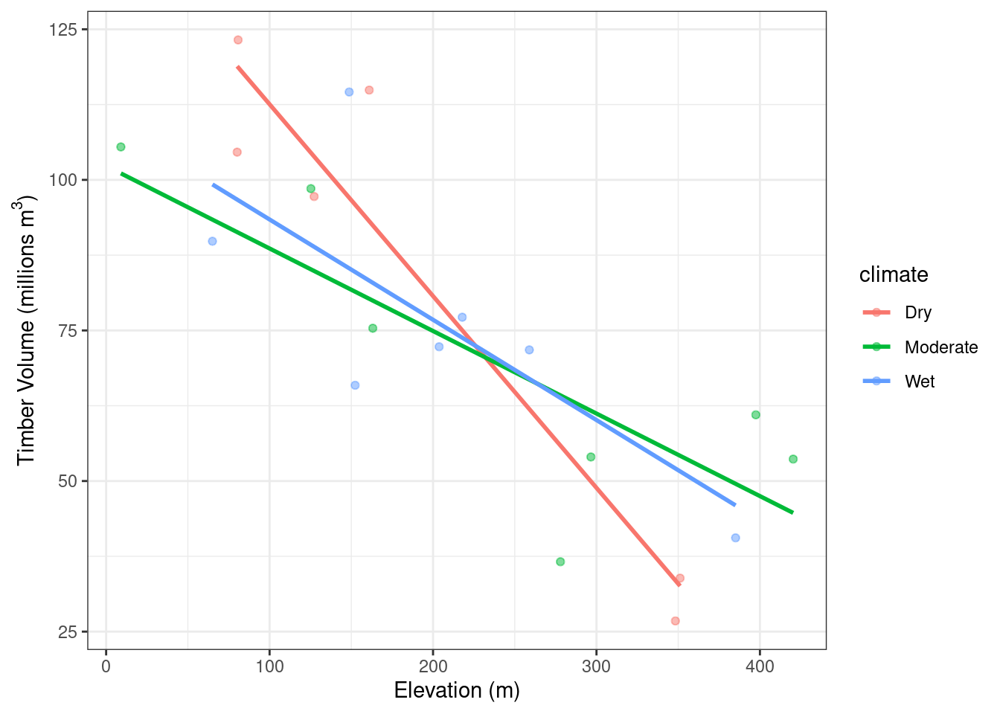

library(ggplot2)
library(truncnorm)
library(dplyr)
library(tidyr)
# set a seed for reproducibility
set.seed(10)GEM500: Simulating Data
Here is a simple workflow to generate and visualize some data for research proposals. Start by calling some basic packages
Elevation & Timber Harvesting
Two Continuous variables
Imagine a hypothetical relationship between elevation and timber harvesting. As elevation increases, harvesting decreases. I want to generate some data to demonstrate this relationship. Let’s generate a variable (elevation) based on potentially realistic values.
Here, we generate 20 elevation values with minimum 0m, maximum 1500m, mean 200m, and standard deviation 200m.
elevation <- rtruncnorm(a = 0, b = 1500, n = 20, mean = 200, sd = 200)Next, we generate harvesting values based on our prediction of the negative relationship between elevation and harvesting. To do this, we played around with different slopes and y-intercepts to generate harvesting values that make sense. For a negative relationship, the slope should be negative. We also add a positive intercept because negative harvesting values wouldn’t make sense for our data. To create variation in the data, we add some random variability (residuals) from a normal distribution (-50, 50) with mean 0, standard deviation 20.
harvesting <- (elevation*(-1/6) + 120)
# y = slope(x) + intercept + random variation
harvesting_random <- (elevation * (-1 / 6) + 120 + rtruncnorm(a = -50, b = 50, n = 20, mean = 0, sd = 20))Finally, we join these two simulated vectors in a data frame and use ggplot2 to create a simple plot of my predicted results (Figure 1).
# join
data1 <- data.frame(
"elevation" = elevation,
"harvesting" = harvesting,
"harvesting_random" = harvesting_random)
# plot linear relationship without variability
p1 <- ggplot(data1, aes(y = harvesting, x = elevation)) +
geom_line(linewidth = 1) + # line
labs(x = "Elevation (m)", y = expression(paste("Timber Volume (",m^3, ")"))) + # add axis labels
theme_bw()
p1
# plot linear relationship with variability
p2 <- ggplot(data1, aes(y = harvesting_random, x = elevation)) +
geom_point(alpha = 0.5) + #add point data
geom_smooth(method = "lm", se = FALSE, col = "black") + # add linear regression line
labs(x = "Elevation (m)", y = expression(paste("Timber Volume (",m^3, ")"))) + # add axis labels
theme_bw()
p2


We can also build an actual regression model to show our relationship.
lm1 <- lm(data = data1, harvesting_random ~ elevation)
summary(lm1)
Call:
lm(formula = harvesting_random ~ elevation, data = data1)
Residuals:
Min 1Q Median 3Q Max
-26.4995 -11.8651 0.4443 8.5862 28.6277
Coefficients:
Estimate Std. Error t value Pr(>|t|)
(Intercept) 118.16486 7.84723 15.058 1.21e-11 ***
elevation -0.19811 0.03209 -6.173 7.92e-06 ***
---
Signif. codes: 0 '***' 0.001 '**' 0.01 '*' 0.05 '.' 0.1 ' ' 1
Residual standard error: 17.11 on 18 degrees of freedom
Multiple R-squared: 0.6792, Adjusted R-squared: 0.6614
F-statistic: 38.11 on 1 and 18 DF, p-value: 7.919e-06Two continuous, one discrete variable
Let’s try adding in another (discrete) factor and visualizing the results.
Here, we are adding a random climate column with three categories (wet, moderate, dry). If you want this column to fit a specific prediction, you could specify which cases you want assigned to which climate class (e.g., elevation < 200, timber volume > 50 = wet). This can be easily down with dplyr::case_when. Let’s see what it looks like now (Figure 2).
# create 3 climate classes with same length of data
climate <- as.factor(rep(c("Wet", "Moderate", "Dry"), length.out = 20)) # factor for plotting
# concatenate to original data
data1 <- cbind(data1, climate)
p2 <- ggplot(data1, aes(y = harvesting_random, x = elevation, col = climate)) + # assign color based on climate class
geom_point(alpha=0.5) + #a dd point data
geom_smooth(method = "lm", se = FALSE) + # add linear regression line (no variability)
labs(x = "Elevation (m)", y = expression(paste("Timber Volume (millions ", m^3, ")"))) +# add axis labels
theme_bw()
p2

And below the corresponding model.
lm2 <- lm(data = data1, harvesting_random ~ elevation + climate)
summary(lm2)
Call:
lm(formula = harvesting_random ~ elevation + climate, data = data1)
Residuals:
Min 1Q Median 3Q Max
-25.8973 -10.4038 -0.3444 9.4229 27.6194
Coefficients:
Estimate Std. Error t value Pr(>|t|)
(Intercept) 120.98611 9.85038 12.282 1.47e-09 ***
elevation -0.19616 0.03429 -5.720 3.16e-05 ***
climateModerate -4.40415 10.15426 -0.434 0.670
climateWet -4.84894 10.01869 -0.484 0.635
---
Signif. codes: 0 '***' 0.001 '**' 0.01 '*' 0.05 '.' 0.1 ' ' 1
Residual standard error: 17.99 on 16 degrees of freedom
Multiple R-squared: 0.6846, Adjusted R-squared: 0.6255
F-statistic: 11.58 on 3 and 16 DF, p-value: 0.0002769Bird Species Richness
One continuous, one discrete variable
This time, let’s image the density of birds nesting in different tree species. We hypothesize that bird density is greatest in Douglas-fir, and lower in Cedar and Hemlock.
First, we generate the data for one species (cedar) from a truncated normal distribution. Next, we simulate data for Douglas-fir, relative to cedar (3x the values of cedar, plus some random variation). We then set the values for hemlock to be the same is ceder plus some random variation.
# rounded to 0 decimal places because these should be integers
cedar <- rtruncnorm(a = 0, b = 20, n = 20, mean = 2, sd = 5) %>% round(0)
fir <- cedar * 3 + rtruncnorm(a = -1, b = 1, n = 20, mean = 0, sd = 1) %>% round(0)
hemlock <- cedar * 1 + rtruncnorm(a = -1, b = 2, n = 20, mean = 0, sd = 1) %>% round(0)Next, we join the observations in a data frame and restructure it using tidyr::pivot_longer to plot it in ggplot2 using a boxplot (Figure 3).
# join
data2 <- data.frame(
"Cedar" = cedar,
"Douglas.fir" = fir,
"Hemlock" = hemlock) %>%
pivot_longer(1:3, names_to = "tree", values_to = "birds") # convert to long formatc
# housekeeping stuff for plotting
data2 <- as.data.frame(data2)
data2$tree <- as.factor(data2$tree)
p3 <- ggplot(data2, aes(x=tree, y=birds)) +
geom_boxplot(outlier.shape=NA,) + # create boxplots and remove outliers
geom_jitter(alpha=0.3) + # add the raw data, alpha specifies transparency
labs(y = "Bird Density", x = "Tree Species") + # add axis labels
theme_bw()
p3
Finally, we conduct an ANOVA to observe whether there are statistically differences between pairs of distributions.
aov1 <- aov(data = data2, birds ~ tree)
summary(aov1) Df Sum Sq Mean Sq F value Pr(>F)
tree 2 1472 736.3 18.4 6.84e-07 ***
Residuals 57 2281 40.0
---
Signif. codes: 0 '***' 0.001 '**' 0.01 '*' 0.05 '.' 0.1 ' ' 1TukeyHSD(aov1) Tukey multiple comparisons of means
95% family-wise confidence level
Fit: aov(formula = birds ~ tree, data = data2)
$tree
diff lwr upr p adj
Douglas.fir-Cedar 10.75 5.936214 15.563786 0.0000044
Hemlock-Cedar 0.50 -4.313786 5.313786 0.9661666
Hemlock-Douglas.fir -10.25 -15.063786 -5.436214 0.0000110Export Results
ggsave("figure1.jpg", p1) # specify dpi, width, height, device (png, dpf, etc.) here
ggsave("figure2.jpg", p2)
ggsave('figure3.jpg', p3)